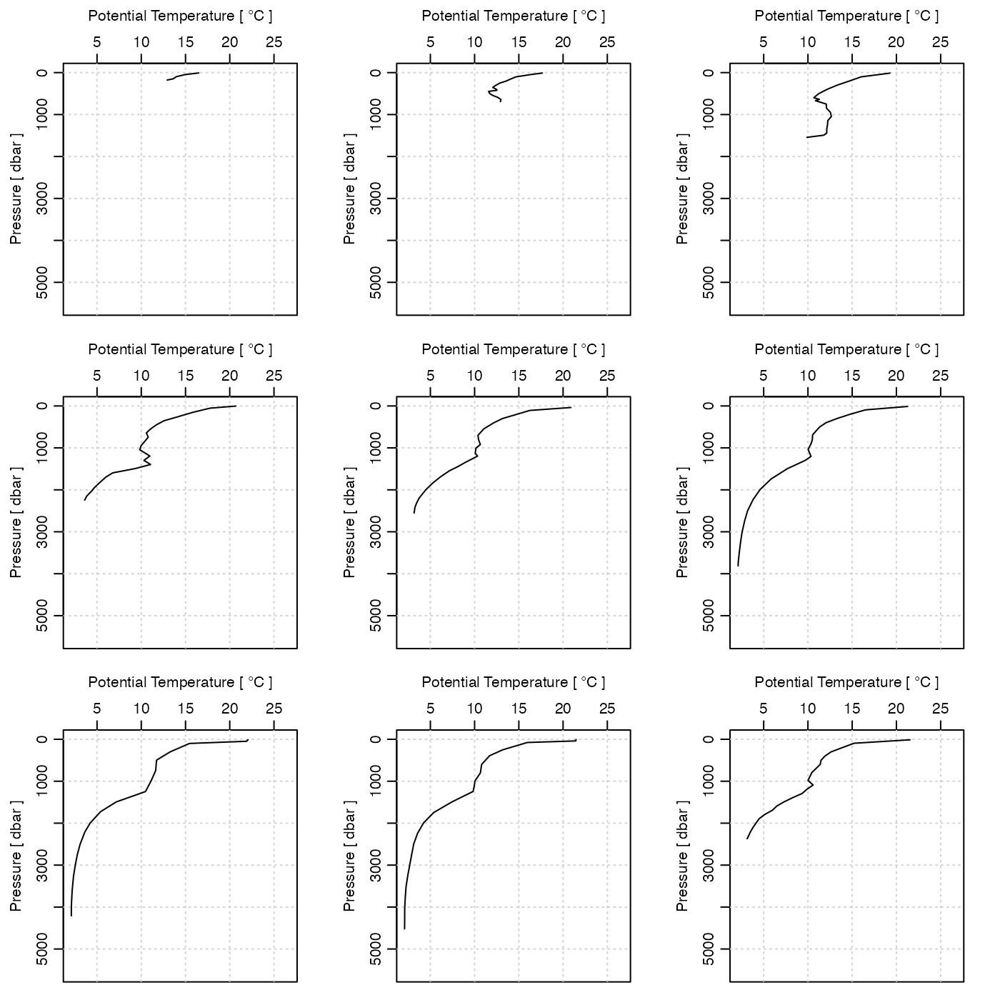

This class stores data from oceanographic section surveys.
Sections can be read with read.section() or created with
read.section() or created from CTD objects by using
as.section() or by adding a ctd station to an existing section with
sectionAddStation().
Sections may be sorted with sectionSort(), subsetted with
subset,section-method(), smoothed with sectionSmooth(), and
gridded with sectionGrid(). A "spine" may be added to a section
with addSpine(). Sections may be summarized with
summary,section-method() and plotted
with plot,section-method().
The sample dataset section() contains data along WOCE line A03.
dataAs with all oce objects, the data slot
for section objects is a
list containing the main data for the object.
metadataAs with all oce objects, the metadata slot
for section objects is a list containing
information about the data or about the object itself.
Examples that are of common interest include stationId, longitude, latitude and time.
processingLogAs with all oce objects, the processingLog slot
for section objects is a
list with entries describing the creation and evolution
of the object. The contents are updated by various oce functions to
keep a record of processing steps. Object summaries and
processingLogShow() both display the log.
Although the [[<- operator may permit modification of the contents
of section objects (see [[<-,section-method),
it is better to use oceSetData() and oceSetMetadata(),
because those functions save an entry in the processingLog
that describes the change.
The full contents of the data and metadata slots of a section
object may be retrieved in the standard R way using slot(). For
example slot(o,"data") returns the data slot of an object named o,
and similarly slot(o,"metadata") returns
the metadata slot.
The slots may also be obtained with the [[,section-method
operator, as e.g. o[["data"]] and o[["metadata"]], respectively.
The [[,section-method operator can also
be used to retrieve items from within the data and metadata slots.
For example, o[["temperature"]] can be used to retrieve temperature
from an object containing that quantity. The rule is that a named
quantity is sought first within the object's metadata slot,
with the data slot being checked only if metadata does not
contain the item. This [[ method can also be used to get
certain derived quantities, if the object contains sufficient
information to calculate them. For example, an object that holds
(practical) salinity, temperature and pressure, along with
longitude and latitude, has sufficient information to compute
Absolute Salinity, and so o[["SA"]] will yield the
calculated Absolute Salinity.
It is also possible to find items more directly, using oceGetData() and
oceGetMetadata(), but neither of these functions can
retrieve derived items.
Other classes provided by oce:
adp-class,
adv-class,
argo-class,
bremen-class,
cm-class,
coastline-class,
ctd-class,
lisst-class,
lobo-class,
met-class,
oce-class,
odf-class,
rsk-class,
sealevel-class,
topo-class,
windrose-class,
xbt-class
Other things related to section data:
[[,section-method,
[[<-,section-method,
as.section(),
handleFlags,section-method,
initializeFlagScheme,section-method,
plot,section-method,
read.section(),
sectionAddStation(),
sectionGrid(),
sectionSmooth(),
sectionSort(),
section,
subset,section-method,
summary,section-method
library(oce)
data(section)
plot(section[['station', 1]])
pairs(cbind(z=-section[["pressure"]],T=section[["temperature"]],S=section[["salinity"]]))
## T profiles for first few stations in section, at common scale
par(mfrow=c(3,3))
Tlim <- range(section[["temperature"]])
ylim <- rev(range(section[["pressure"]]))
for (stn in section[["station", 1:9]])
plotProfile(stn, xtype="potential temperature", ylim=ylim, Tlim=Tlim)
